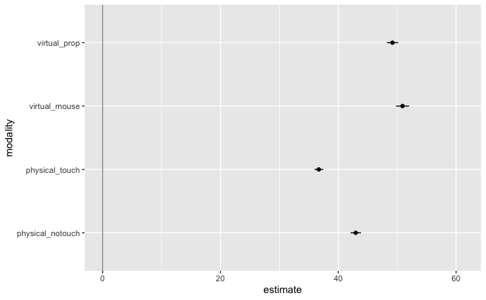
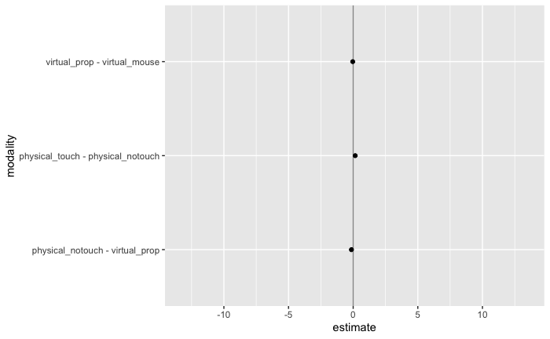

frequentist-multiverse-analysis.Rmdlibrary(knitr) library(dplyr) library(tidyr) library(ggplot2) library(purrr) library(broom) library(gganimate) library(multiverse) library(boot)
In this vignette, we will recreate the multiverse analysis, Frequentist, performed by Dragicevic et al. in Increasing the transparency of research papers with explorable multiverse analyses using the package. The re-analysis is of a study which shows that moving 3D data visualizations to the physical world can improve users’ efficiency at information retrieval tasks.
The original study consisted of two experiments. Dragicevic et al. only re-analyze the second experiment, whose goal was to better understand why physical visualizations appear to be superior. The experiment involved an “enhanced” version of the on-screen 3D chart and an “impoverished” version of the physical 3D chart. The enhanced on-screen chart was rotated using a 3D-tracked tangible prop instead of a mouse. The impoverished physical chart consisted of the same physical object but participants were instructed not to use their fingers for marking. There were 4 conditions:
These manipulations were meant to answer three questions:
We load the data for this study which is contained in data(userlogs) in the multiverse package.
## subject group formerSubject conditionrank modality modalityname repetition
## 1 4 4 no 1 4 virtual-mouse 1
## 2 4 4 no 1 4 virtual-mouse 1
## 3 4 4 no 1 4 virtual-mouse 1
## 4 4 4 no 1 4 virtual-mouse 1
## 5 4 4 no 1 4 virtual-mouse 2
## 6 4 4 no 1 4 virtual-mouse 2
## question trial datasetname readingTime error duration perceivedDifficulty
## 1 1 1 army 26 0 44.5686 2
## 2 2 2 army 10 0 120.6228 4
## 3 3 3 army 2 0 99.4174 3
## 4 4 4 army 19 0 53.7313 3
## 5 1 5 externaldebt 12 1 62.6189 3
## 6 2 6 externaldebt 20 0 59.1863 2
## perceivedTime
## 1 42
## 2 81
## 3 95
## 4 66
## 5 59
## 6 48In this vignette, we are primarily concerned with the variables: duration and modality, as the focus of this analysis is on task completion times.
The first (default) analysis is a one-sided t-test to estimate the means and 95% confidence intervals of the log-transformed task completion time (duration). Since, task completion times are strictly positive, and may have a long tail, this decision makes sense. However, it may be reasonable to use the untransformed data as well. On the other hand, it is also reasonable to use a bootstrap test instead of a t-test.
This results in four possible analysis combinations, two each for data transformation (log and untransformed), and model (t-test and BCa bootsrap).
We need a few helper functions to so that they take the same arguments and return the same output.These functions will help us calculate the mean point estimate and the upper and lower bounds of the 95% confidence interval using the bootstrap method and t-test method.
bootstrappedCI <- function(observations, conf.level, seed = 0) { samplemean <- function(x, d) {return(mean(x[d]))} pointEstimate <- samplemean(observations) if (!(is.na(seed) | is.null(seed))){ set.seed(seed) # make deterministic } bootstrap_samples <- boot::boot(data = observations, statistic = samplemean, R = 5000) bootci <- boot::boot.ci(bootstrap_samples, type = "bca", conf = conf.level) c(pointEstimate, bootci$bca[4], bootci$bca[5]) } tCI <- function(observations, conf.level) { pointEstimate <- mean(observations) sampleSD <- sd(observations) sampleN <- length(observations) sampleError <- qt(1-(1-conf.level)/2, df = sampleN-1) * sampleSD/sqrt(sampleN) c(pointEstimate, pointEstimate - sampleError, pointEstimate + sampleError) }
Next we initialise the multiverse object within which this analysis will take place.
M = multiverse()
Now we define the parameters we want to consider in the multiverse: confidence interval method (ci_method) and data transformation method (data_transform). We also define a parameter for confidence level, as the choice of a 95% confidence level is arbitrary and we can choose to instead present our results with alternate confidence levels. Here we vary between: 50%, 75%, 89%, 85%, 99%, 99.9%. Thus our multiverse consists of: 2 \(\times\) 2 \(\times\) 7 different analysis combinations.
We will use the multiverse code block to enter code into the multiverse. See the { for more details.
ci_method <- branch(ci_method, "t based" ~ "tCI", "bootstrap" ~ "bootstrappedCI" ) data_transform <- branch(data_transform, "log-transformed" ~ log, "untransformed" ~ identity ) conf_level <- branch(conf_level, "50%" ~ 0.5, "67" ~ 0.67, "89" ~ 0.89, "95%" ~ 0.95, "99%" ~ 0.99, "99.9%" ~ 0.999 )
We now look at the multiverse table and see that it has created all the possible combinations:
expand(M)
## # A tibble: 24 x 7
## .universe ci_method data_transform conf_level .parameter_assi… .code .results
## <int> <chr> <chr> <chr> <list> <lis> <list>
## 1 1 t based log-transform… 50% <named list [3]> <nam… <env>
## 2 2 t based log-transform… 67 <named list [3]> <nam… <env>
## 3 3 t based log-transform… 89 <named list [3]> <nam… <env>
## 4 4 t based log-transform… 95% <named list [3]> <nam… <env>
## 5 5 t based log-transform… 99% <named list [3]> <nam… <env>
## 6 6 t based log-transform… 99.9% <named list [3]> <nam… <env>
## 7 7 t based untransformed 50% <named list [3]> <nam… <env>
## 8 8 t based untransformed 67 <named list [3]> <nam… <env>
## 9 9 t based untransformed 89 <named list [3]> <nam… <env>
## 10 10 t based untransformed 95% <named list [3]> <nam… <env>
## # … with 14 more rowsWe then actually perform the steps within the multiverse to get results from the different possible combinations of analysis options. First, we perform the data transformation operation within the multiverse. This will result in the data being appropriately transformed (log or identity) in the corresponding multiverse.
Next, we calculate the mean point estimates and 95% confidence intervals for each condition in the experiment. We also need to format the data so that the results could be neatly stored in a data.frame. We strongly recommend sotring the results that you would wish to extract from the multiverse in a data.frame as that would make it much easier for analysing and visualising the results.
modality <- data.userlogs.raw$modalityname ci.physical_notouch <- do.call(ci_method, list(duration[modality == 'physical-notouch'], conf_level)) ci.physical_notouch <- setNames(as.list(c("physical_notouch", ci.physical_notouch)), c("modality", "estimate", "conf.low", "conf.high")) ci.physical_touch <- do.call(ci_method, list(duration[modality == 'physical-touch'], conf_level)) ci.physical_touch <- setNames(as.list(c("physical_touch", ci.physical_touch)), c("modality", "estimate", "conf.low", "conf.high")) ci.virtual_prop <- do.call(ci_method, list(duration[modality == 'virtual-prop'], conf_level)) ci.virtual_prop <- setNames(as.list(c("virtual_prop", ci.virtual_prop)), c("modality", "estimate", "conf.low", "conf.high")) ci.virtual_mouse <- do.call(ci_method, list(duration[modality == 'virtual-mouse'], conf_level)) ci.virtual_mouse <- setNames(as.list(c("virtual_mouse", ci.virtual_mouse)), c("modality", "estimate", "conf.low", "conf.high")) df <- rbind.data.frame(ci.physical_notouch, ci.physical_touch, ci.virtual_prop, ci.virtual_mouse, make.row.names = FALSE, stringsAsFactors = FALSE) df <- transform(df, estimate = as.numeric(estimate), conf.low = as.numeric(conf.low), conf.high = as.numeric(conf.high))
Since the multiverse only executes the default analysis, we then run the following command to run all the analysis that we have defined in the multiverse.
Next, we need to extract the results from the multiverse. The results for each unique analysis combination (a universe in our multiverse), is stored in an environment in the .results column. We can extract data frames from this column using the function. This creates a new column in our data frame, summary which itself consists of data frames.
## # A tibble: 6 x 8
## .universe ci_method data_transform conf_level .parameter_assi… .code .results
## <int> <chr> <chr> <chr> <list> <lis> <list>
## 1 1 t based log-transform… 50% <named list [3]> <nam… <env>
## 2 2 t based log-transform… 67 <named list [3]> <nam… <env>
## 3 3 t based log-transform… 89 <named list [3]> <nam… <env>
## 4 4 t based log-transform… 95% <named list [3]> <nam… <env>
## 5 5 t based log-transform… 99% <named list [3]> <nam… <env>
## 6 6 t based log-transform… 99.9% <named list [3]> <nam… <env>
## # … with 1 more variable: summary <list>As we can see above, each row in the summary column consists of a \(4 \times 4\), data frame which we will need to unpack. We will use the function to expand the different columns of the data frame into their own columns. Finally, we use the function to unnest the rows of the data frame into their own row. Note that we have a .universe column which indexes each universe in our multiverse i.e. each unique analysis combination.
Below we can see the result of this transformation. You can see that we have created four new columns (modality, estimate, conf.low, conf.high). In addition, we have four rows for each universe corresponding to the results for each of the four conditions in our experiment.
df.mtbl <- unnest_wider(df.mtbl, c(summary)) df.mtbl <- unnest(df.mtbl, cols = c(modality, estimate, conf.low, conf.high)) head(df.mtbl)
## # A tibble: 6 x 11
## .universe ci_method data_transform conf_level .parameter_assi… .code .results
## <int> <chr> <chr> <chr> <list> <lis> <list>
## 1 1 t based log-transform… 50% <named list [3]> <nam… <env>
## 2 1 t based log-transform… 50% <named list [3]> <nam… <env>
## 3 1 t based log-transform… 50% <named list [3]> <nam… <env>
## 4 1 t based log-transform… 50% <named list [3]> <nam… <env>
## 5 2 t based log-transform… 67 <named list [3]> <nam… <env>
## 6 2 t based log-transform… 67 <named list [3]> <nam… <env>
## # … with 4 more variables: modality <chr>, estimate <dbl>, conf.low <dbl>,
## # conf.high <dbl>We will then sort the results, and transform the log transformed variables back on to the natural scale. We are then ready to visualise the result by animating over each universe.
df.mtbl <- arrange(df.mtbl, conf_level, desc(data_transform), desc(ci_method)) df.results <- df.mtbl df.results$estimate[df.mtbl$data_transform == "log-transformed"] = exp(df.mtbl$estimate[df.mtbl$data_transform == "log-transformed"]) df.results$conf.low[df.mtbl$data_transform == "log-transformed"] = exp(df.mtbl$conf.low[df.mtbl$data_transform == "log-transformed"]) df.results$conf.high[df.mtbl$data_transform == "log-transformed"] = exp(df.mtbl$conf.high[df.mtbl$data_transform == "log-transformed"]) df.results %>% head()
## # A tibble: 6 x 11
## .universe ci_method data_transform conf_level .parameter_assi… .code .results
## <int> <chr> <chr> <chr> <list> <lis> <list>
## 1 7 t based untransformed 50% <named list [3]> <nam… <env>
## 2 7 t based untransformed 50% <named list [3]> <nam… <env>
## 3 7 t based untransformed 50% <named list [3]> <nam… <env>
## 4 7 t based untransformed 50% <named list [3]> <nam… <env>
## 5 19 bootstrap untransformed 50% <named list [3]> <nam… <env>
## 6 19 bootstrap untransformed 50% <named list [3]> <nam… <env>
## # … with 4 more variables: modality <chr>, estimate <dbl>, conf.low <dbl>,
## # conf.high <dbl>p <- df.results %>% ggplot() + geom_vline( xintercept = 0, colour = '#979797' ) + geom_point( aes(x = estimate, y = modality)) + geom_errorbarh( aes(xmin = conf.low, xmax = conf.high, y = modality), height = 0) + transition_manual( .universe ) animate(p, nframes = 28, fps = 2)
## nframes and fps adjusted to match transition
The figure above shows the (geometric) mean completion time for each condition. At first sight, physical touch appears to be cnsistently faster than the other conditions, across all possible analysis combinations specified in the multiverse. However, since condition is a within-subject factor, it is preferable to examine within-subject differences, which we show in the next section.
Next, we compute the pairwise ratios between mean completion times to examine the within-subject differences.
diff.touch_notouch <- duration[modality == 'physical-notouch'] - duration[modality == 'physical-touch'] `physical_touch - physical_notouch` <- do.call(ci_method, list(diff.touch_notouch, conf_level)) `physical_touch - physical_notouch` <- setNames(as.list(c("physical_touch - physical_notouch", `physical_touch - physical_notouch`)), c("modality", "estimate", "conf.low", "conf.high")) diff.notouch_prop <- duration[modality == 'physical-notouch'] - duration[modality == 'virtual-prop'] `physical_notouch - virtual_prop` <- do.call(ci_method, list(diff.notouch_prop, conf_level)) `physical_notouch - virtual_prop` <- setNames(as.list(c("physical_notouch - virtual_prop", `physical_notouch - virtual_prop`)), c("modality", "estimate", "conf.low", "conf.high")) diff.propr_mouse <- duration[modality == 'virtual-prop'] - duration[modality == 'virtual-mouse'] `virtual_prop - virtual_mouse` <- do.call(ci_method, list(diff.propr_mouse, conf_level)) `virtual_prop - virtual_mouse` <- setNames(as.list(c("virtual_prop - virtual_mouse", `virtual_prop - virtual_mouse`)), c("modality", "estimate", "conf.low", "conf.high")) df.diffs <- rbind.data.frame(`physical_touch - physical_notouch`, `physical_notouch - virtual_prop`, `virtual_prop - virtual_mouse`, make.row.names = FALSE, stringsAsFactors = FALSE) df.diffs <- transform(df.diffs, estimate = as.numeric(estimate), conf.low = as.numeric(conf.low), conf.high = as.numeric(conf.high))
We can output the data frame that we have created inside the multiverse code block, as we would for a data frame in R. This would output the result in the default universe () of the multiverse. We can see that this data frame, as intended, has computed the mean differences and 95% confidence intervals between the conditions we care about.
df.diffsWe then execute all the other analysis combinations (universes) in our multiverse.
We then use the workflow described in the previous section to extract results for each universe in the multiverse. We then use gganimate to plot the results.
df.results.diff <- expand(M) %>% extract_variables(df.diffs) %>% unnest(c(df.diffs)) %>% arrange(desc(data_transform), conf_level, desc(ci_method)) df.results.diff %>% head()
## # A tibble: 6 x 11
## .universe ci_method data_transform conf_level .parameter_assi… .code .results
## <int> <chr> <chr> <chr> <list> <lis> <list>
## 1 7 t based untransformed 50% <named list [3]> <nam… <env>
## 2 7 t based untransformed 50% <named list [3]> <nam… <env>
## 3 7 t based untransformed 50% <named list [3]> <nam… <env>
## 4 19 bootstrap untransformed 50% <named list [3]> <nam… <env>
## 5 19 bootstrap untransformed 50% <named list [3]> <nam… <env>
## 6 19 bootstrap untransformed 50% <named list [3]> <nam… <env>
## # … with 4 more variables: modality <chr>, estimate <dbl>, conf.low <dbl>,
## # conf.high <dbl>A value lower than 1 (i.e., on the left side of the dark line) means the condition on the left is faster than the condition on the right. The confidence intervals are not corrected for multiplicity. The results from this study appear to be relatively robust and consistent across all the possible combinations that we have tried.
p <- df.results.diff %>% ggplot() + geom_vline( xintercept = 0, colour = '#979797' ) + geom_point( aes(x = estimate, y = modality)) + geom_errorbarh( aes(xmin = conf.low, xmax = conf.high, y = modality), height = 0) + transition_manual( .universe ) animate(p, nframes = 28, fps = 4)
## nframes and fps adjusted to match transition
Correction for multiplicity can be another analysis option in the multiverse analysis. Since the individual confidence level is 95%, an interval that does not contain the value 1 incidates a statistically significant difference at the α=.05 level. The probability of getting at least one such interval if all 3 population means were zero (i.e., the familywise error rate) is α=.14. Likewise, the simultaneous confidence level is 86%, meaning that if we replicate our experiment over and over, we should expect the 3 confidence intervals to capture all 3 population means 86% of the time.
This example was adapted from Dragicevic et al.’s study Increasing the transparency of research papers with explorable multiverse analyses to show how previously performed multiverse analysis can be reproduced using the package in a flexible, and easily readable manner. It also shows how a multiverse analysis can be implemented in mostly base R syntax.